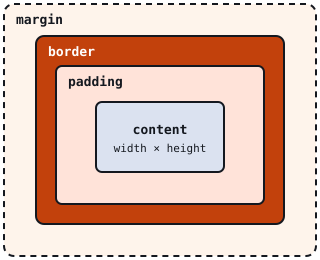

1. Из чего состоит блок

Каждый HTML-элемент браузер рисует как прямоугольную коробку. У коробки четыре слоя — от центра к краю:
- content: содержимое, его размеры задают
widthиheight; - padding: внутренний отступ между содержимым и рамкой;
- border: рамка;
- margin: внешний отступ до соседних элементов.
По умолчанию width задаёт ширину только содержимого. Если добавить
padding и border, элемент станет шире. Поэтому почти во всех
проектах в начале CSS пишут box-sizing: border-box, тогда ширина считается
вместе с отступами и рамкой.
/* блок шириной ровно 280px вместе с рамкой */
.box {
box-sizing: border-box;
width: 280px;
padding: 24px;
border: 6px solid tomato;
margin: 24px auto; /* auto по бокам центрирует блок */
}2. block, inline, inline-block
Свойство display определяет, как элемент встаёт в поток страницы.
Блочные элементы (div, p, section) занимают всю строку,
строчные (span, a, strong) занимают только место под текст.
Это обычный текст, в котором есть inline-элемент и ещё один inline. Ширина 300px для них прописана, но игнорируется.
display: inline-block, в строку, но с размерами 130 × 64 130 × 64 130 × 64
Вертикальные margin у соседних блочных элементов не складываются, а
«схлопываются»: между ними остаётся больший из двух отступов.
3. Позиционирование и z-index
position: relative оставляет элемент в потоке и делает его «точкой отсчёта».
Элемент с position: absolute вынимается из потока и ставится по
координатам top, left относительно ближайшего
позиционированного родителя. Порядок слоёв задаёт z-index:
чем больше число, тем выше слой.
.stack { position: relative; }
.stack__card { position: absolute; }
.stack__card--2 { top: 50px; left: 90px; z-index: 3; }
Значок «важно» выше тоже использует абсолютное позиционирование: у заметки стоит
position: relative, а у значка position: absolute; top: -14px.
4. Песочница
Измени padding, border или margin и посмотри, как меняется блок. Результат обновляется сразу.